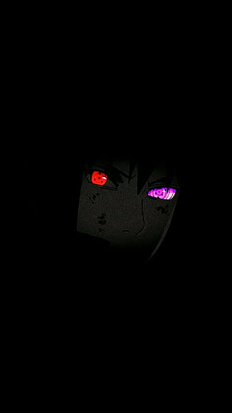

⭐ Score
8.5
🏅 Rank
♯5
👥 Popularity
♯755
❤️ Members
355,019
Lord of Mysteries
15 eps
35 min
2025
TV-14
Supernatural
Steampunk
Mystery
Dark Fantasy
Synopsis
Zhou Mingrui awakens in the body of Klein Moretti
in a Victorian world of steam and hidden magic.
As a new Beyonder, he confronts secret societies and
dark rituals while seeking the truth behind his mysterious transmigration.
Studio
B.CMay Pictures
Trailer

Arthur Callahan
Sept 16, 2025
Not Recommended
Chaotic
Not a great start…
The first 5 minutes… felt akin to a DC looter shooter seizure.
The visuals and sound were overwhelming and confusing,
and overall it made me want to stop watching.

Annie12Leonhardt
Sept 11, 2025
Recommended
Mysterious
The world is richly detailed and mysterious… but if you did not
read the source material, you might feel lost.
The blend of 3D and 2D animation is impressive,
and I think it has potential as it progresses.

33FlameTree33
Jul 25, 2025
Recommended
Engaging
Honestly frustrating when
people leave 1-star reviews.
Lord of the Mysteries rewards patience and attention to detail…
real fans know the value of the slow burn.